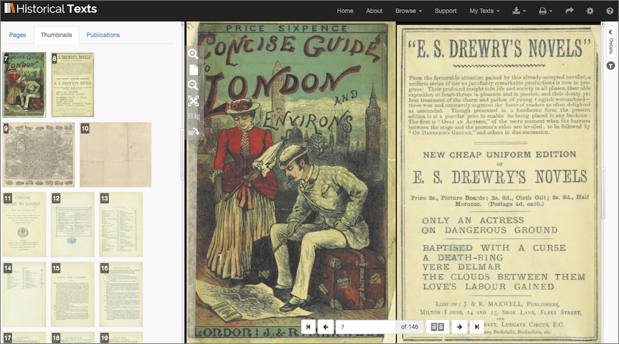
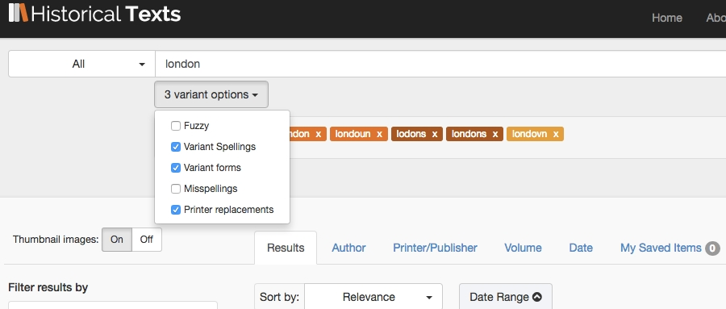

If you're interested in local history then you'll find lots to discover in Historical Texts, for this feature we take a look at the London area. From maps and tourist guides and texts about the Great Fire and the Great Plague to costs for hospitals and Hackney carriages and the history of the Thames you'll find a wealth of information. We highlight some of the wide variety of content available in Historical Texts relating to London, along with direct links to selected texts and search results as well as tips on how to explore the resource further.
Concise Guide to London, with map, etc. (Printer/publisher: J. & R. Maxwell, 1885)
You'll find a range of maps and plans as well as tourist guides for London, including guides to hotels and places of interest.
Printer/publisher: J. & R. Maxwell
Published: 1885
BL (OA)
Printer/publisher: Henry Herbert
Published: 1872-1903
BL (OA)
Printer/publisher: Chatto & Windus
Published: 1881
BL (OA)
Discover more about events in London such as the Great Fire in 1666, the Plague of 1665-1666 and the River Thames frost fairs, the International Exhibtion of 1862, and the opening of what would become the London Underground...
Printer/publisher: Printed for I. Wright, I. Clark...
Published: 1683
eebo
Author: Campbell, C. J
Published: 1862
BL (OA)
Printer/Publisher: Estes & Lauriat
Published: 1884
BL (OA)
Printer/publisher: Printed by J.D. for Richard Chiswell
Published: 1681
EEBO
Amoungst the wide range of publications to explore you'll find surveys, charges for Hackney carriages and hospitals, contents of the Tower of London and early editions of magazines such as The London magazine with content on London and further afield.
Author: John Mottley
Published: 1753
ECCO
Printer/publisher: s.n
Published: 1647
EEBO
Author: Isaac Kimber
Published: 1747-1783
ECCO
Author: Commissioners of Police, Dublin
Published: 1793
ECCO
Some words had various spellings in earlier times e.g. 'London and Londoun ' so you may want to include variant spellings, along with variant forms and printer substitutions to pick up results for these as well. Printer substitutions are where a printer may have run out of a particular letter and substituted another for it, for instance the letter 'v' may have been used instead of a letter 'u' as in 'Londovn'.
You may find the subject search option useful to discover texts that have been identified with the subject London. You can find any BL or EEBO texts marked with this subject by using the subject search option in the drop down menu to the left of the search box and entering a subject area.